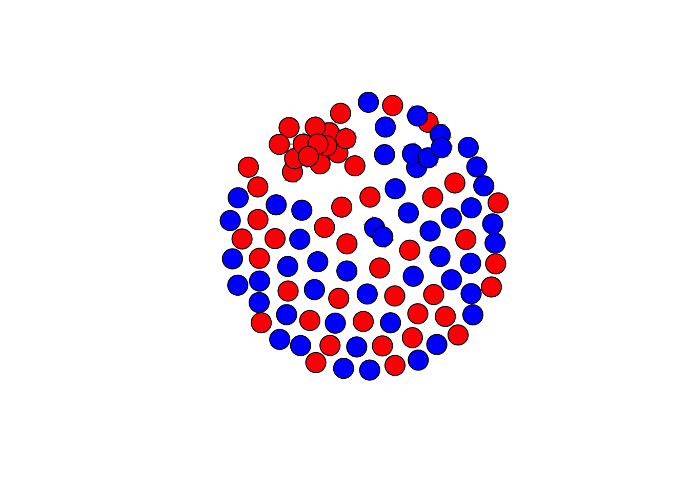

rm(list = ls())
require(tidyverse)
require(installr)
require(foreign)
require(jsonlite)
require(openalexR)
require(scholar)
require(rvest)
require(igraph)
require(tidyr)
load("/Users/jannevanheesch/Documents/R. SN/scholars_20240924.rda")
scholars <- x
rm(x)#Collaboration function
fcolnet <- function(data = scholars, university = "RU", discipline = "sociology", waves = list(c(2015,
2018), c(2019, 2023)), type = c("first")) {
# step 1
demographics <- do.call(rbind.data.frame, data$demographics)
demographics <- demographics %>%
mutate(Universiteit1.22 = replace(Universiteit1.22, is.na(Universiteit1.22), ""), Universiteit2.22 = replace(Universiteit2.22,
is.na(Universiteit2.22), ""), Universiteit1.24 = replace(Universiteit1.24, is.na(Universiteit1.24),
""), Universiteit2.24 = replace(Universiteit2.24, is.na(Universiteit2.24), ""), discipline.22 = replace(discipline.22,
is.na(discipline.22), ""), discipline.24 = replace(discipline.24, is.na(discipline.24), ""))
sample <- which((demographics$Universiteit1.22 %in% university | demographics$Universiteit2.22 %in%
university | demographics$Universiteit1.24 %in% university | demographics$Universiteit2.24 %in%
university) & (demographics$discipline.22 %in% discipline | demographics$discipline.24 %in% discipline))
demographics_soc <- demographics[sample, ]
scholars_sel <- lapply(scholars, "[", sample)
# step 2
ids <- demographics_soc$au_id
nwaves <- length(waves)
nets <- array(0, dim = c(nwaves, length(ids), length(ids)), dimnames = list(wave = 1:nwaves, ids,
ids))
dimnames(nets)
# step 3
df_works <- tibble(works_id = unlist(lapply(scholars_sel$work, function(l) l$id)), works_author = unlist(lapply(scholars_sel$work,
function(l) l$author), recursive = FALSE), works_year = unlist(lapply(scholars_sel$work, function(l) l$publication_year),
recursive = FALSE))
df_works <- df_works[!duplicated(df_works), ]
# step 4
if (type == "first") {
for (j in 1:nwaves) {
df_works_w <- df_works[df_works$works_year >= waves[[j]][1] & df_works$works_year <= waves[[j]][2],
]
for (i in 1:nrow(df_works_w)) {
ego <- df_works_w$works_author[i][[1]]$au_id[1]
alters <- df_works_w$works_author[i][[1]]$au_id[-1]
if (sum(ids %in% ego) > 0 & sum(ids %in% alters) > 0) {
nets[j, which(ids %in% ego), which(ids %in% alters)] <- 1
}
}
}
}
if (type == "last") {
for (j in 1:nwaves) {
df_works_w <- df_works[df_works$works_year >= waves[[j]][1] & df_works$works_year <= waves[[j]][2],
]
for (i in 1:nrow(df_works_w)) {
ego <- rev(df_works_w$works_author[i][[1]]$au_id)[1]
alters <- rev(df_works_w$works_author[i][[1]]$au_id)[-1]
if (sum(ids %in% ego) > 0 & sum(ids %in% alters) > 0) {
nets[j, which(ids %in% ego), which(ids %in% alters)] <- 1
}
}
}
}
if (type == "all") {
for (j in 1:nwaves) {
df_works_w <- df_works[df_works$works_year >= waves[[j]][1] & df_works$works_year <= waves[[j]][2],
]
for (i in 1:nrow(df_works_w)) {
egos <- df_works_w$works_author[i][[1]]$au_id
if (sum(ids %in% egos) > 0) {
nets[j, which(ids %in% egos), which(ids %in% egos)] <- 1
}
}
}
}
output <- list()
output$data <- scholars_sel
output$nets <- nets
return(output)
}Make a data-frame for all political science and sociology works in two waves. 2003-2013, and 2014-2024.
#first, set the waves, universities, disciplines and type
df_RU <- fcolnet(data = scholars, university = "RU", discipline = c("sociology", "political science"), waves = list(c(2003,
2013), c(2014, 2024)), type = c("first"))df <- df_RU$data #separate data and nets
nets <- df_RU$nets
#df for demographics (author level)
df_ego <- do.call(rbind.data.frame, df$demographics)
#df for authors
df_auth <- do.call(rbind.data.frame, df$scholars_oa)#create function for all (3) fields
f_topics_f <- function(x) {
topics <- do.call(rbind.data.frame, x$topics)
topics <- topics[topics$i < 4 & topics$name == "field",]
HI_f <- 1 - sum((prop.table(table(topics$display_name)))^2)
return(HI_f)
}
HI_f <- sapply(X = df$works, FUN = f_topics_f) #Herfindahl-Hirschman index, measuring the distribution of subjects of a paper. Squaring the proportion of each discipline involved in the work.
HI_f## [1] 0.66500000 0.81204529 0.30092593 0.49130763 0.50921759 0.43005671
## [7] 0.72593533 0.53785714 0.07760000 0.24178201 0.19918515 0.68002081
## [13] 0.55102337 0.51760000 0.43952412 0.56705539 0.30517578 0.29218670
## [19] 0.22088944 0.43295999 0.57734722 0.49054460 0.49478637 0.66122449
## [25] 0.51461988 0.53111111 0.69531250 0.10493827 0.54442344 0.19753086
## [31] 0.39555556 0.15277778 0.33673469 0.21453287 0.00000000 0.20734694
## [37] 0.20370370 0.66666667 0.62003781 0.61111111 0.75200000 0.28928200
## [43] 0.27653872 0.21896332 0.56944444 0.28377262 0.46000000 0.31404959
## [49] 0.47736626 0.11351828 0.61111111 0.00000000 0.61224490 0.09365245
## [55] 0.23301403 0.30919117 0.27777778 0.30991736 0.00000000 0.27777778
## [61] 0.67739645 0.57708264 0.58294860 0.44444444 0.66666667 0.14083219
## [67] 0.43751680 0.10512397 0.26337778 0.69540166 0.44444444 1.00000000
## [73] 0.42522445 0.19342053 0.12005740 0.53125000 0.64000000 0.17563548
## [79] 0.28693182 0.81632653 0.19897959 0.00000000 0.56000000 0.64496528
## [85] 0.15244800 0.29298185 0.29477772 0.66907793 0.26188464 0.53629630
## [91] 0.52921656 0.57771775 0.13780097 0.44444444 0.24296296 0.61983471
## [97] 0.07133059 0.34641644 0.37500000 0.26764213 0.47177934#create a function for all (3) subfields
f_topics_sf <- function(x) {
topics <- do.call(rbind.data.frame, x$topics) #ik zet voor 1 auteur alle topics onder elkaar
topics <- topics[topics$i < 4 & topics$name == "subfield",]
HI_sf <- 1 - sum((prop.table(table(topics$display_name)))^2)
return(HI_sf)
}
HI_sf <- sapply(X = df$works, FUN = f_topics_sf) #Herfindahl-Hirschman index, measuring the distribution of subjects of a paper. Squaring the proportion of each discipline involved in the work.
HI_sf## [1] 0.8600000 0.9138970 0.8256173 0.7941547 0.8947598 0.7523629 0.9363856
## [8] 0.8626531 0.6664000 0.7426471 0.7722952 0.8964042 0.8366962 0.8472000
## [15] 0.8642009 0.8660975 0.7353516 0.8175819 0.7858097 0.8124746 0.8781168
## [22] 0.8546384 0.8070957 0.8457143 0.8445676 0.7911111 0.8593750 0.5123457
## [29] 0.8657845 0.7654321 0.8133333 0.6944444 0.7755102 0.7543253 0.3750000
## [36] 0.7134694 0.7592593 0.7654321 0.8771267 0.6666667 0.7872000 0.8553590
## [43] 0.7667639 0.7455557 0.7638889 0.8080832 0.7600000 0.7107438 0.8175583
## [50] 0.5177924 0.7777778 0.3750000 0.8163265 0.6749480 0.7248830 0.8052930
## [57] 0.6666667 0.7148760 0.5600000 0.7222222 0.9112426 0.8475869 0.8759618
## [64] 0.4444444 0.6666667 0.5523548 0.7653856 0.6307438 0.6376889 0.8518560
## [71] 0.6666667 1.0000000 0.7774581 0.7327256 0.5699936 0.6875000 0.8200000
## [78] 0.4979043 0.8086260 0.8877551 0.6377551 0.5714286 0.8177778 0.8003472
## [85] 0.5976320 0.7237831 0.8147636 0.8491512 0.7429054 0.8167901 0.7989676
## [92] 0.8760860 0.6290952 0.6666667 0.6834568 0.7231405 0.6748971 0.7877875
## [99] 0.6250000 0.7413504 0.7822066#create a function for all (3) topics
f_topics_t <- function(x) {
topics <- do.call(rbind.data.frame, x$topics) #ik zet voor 1 auteur alle topics onder elkaar
topics <- topics[topics$i < 4 & topics$name == "topic",]
HI_t <- 1 - sum((prop.table(table(topics$display_name)))^2) #hier bereken ik de HI
return(HI_t)
}
HI_t <- sapply(X = df$works, FUN = f_topics_t) #Herfindahl-Hirschman index, measuring the distribution of subjects of a paper. Squaring the proportion of each discipline involved in the work.
HI_t## [1] 0.9250000 0.9794189 0.9135802 0.9549005 0.9467267 0.9366730 0.9823606
## [8] 0.9528061 0.9192000 0.9238754 0.9253056 0.9251937 0.9557265 0.9256000
## [15] 0.9803950 0.9585589 0.9321289 0.9786840 0.9607237 0.9765035 0.9577546
## [22] 0.9299570 0.9333910 0.9338776 0.9202832 0.9177778 0.9218750 0.8271605
## [29] 0.9376181 0.8395062 0.9333333 0.8611111 0.8265306 0.8788927 0.7500000
## [36] 0.8914286 0.9259259 0.7654321 0.9262760 0.7638889 0.8640000 0.9032258
## [43] 0.9407078 0.8979023 0.7777778 0.9671879 0.9000000 0.8264463 0.9190672
## [50] 0.8601118 0.8333333 0.7500000 0.8571429 0.9296306 0.9157942 0.9532108
## [57] 0.8333333 0.9338843 0.8000000 0.8333333 0.9694675 0.9412765 0.9141274
## [64] 0.6666667 0.6666667 0.8800488 0.9626445 0.9249587 0.8961778 0.9367313
## [71] 0.6666667 1.0000000 0.9636777 0.9047430 0.9194834 0.8125000 0.9000000
## [78] 0.9060979 0.8933368 0.9107143 0.8826531 0.7346939 0.9155556 0.9279514
## [85] 0.9534720 0.9023008 0.9262209 0.9338349 0.9312885 0.9520988 0.9503775
## [92] 0.9487080 0.8854875 0.6666667 0.8829630 0.9297521 0.9272977 0.9708344
## [99] 0.7500000 0.9413199 0.9162946#make a df out of the two different indexes to compare
df_HI <- data.frame(HI_f = HI_f, HI_sf = HI_sf, HI_t = HI_t)
print(df_HI)## HI_f HI_sf HI_t
## 1 0.66500000 0.8600000 0.9250000
## 2 0.81204529 0.9138970 0.9794189
## 3 0.30092593 0.8256173 0.9135802
## 4 0.49130763 0.7941547 0.9549005
## 5 0.50921759 0.8947598 0.9467267
## 6 0.43005671 0.7523629 0.9366730
## 7 0.72593533 0.9363856 0.9823606
## 8 0.53785714 0.8626531 0.9528061
## 9 0.07760000 0.6664000 0.9192000
## 10 0.24178201 0.7426471 0.9238754
## 11 0.19918515 0.7722952 0.9253056
## 12 0.68002081 0.8964042 0.9251937
## 13 0.55102337 0.8366962 0.9557265
## 14 0.51760000 0.8472000 0.9256000
## 15 0.43952412 0.8642009 0.9803950
## 16 0.56705539 0.8660975 0.9585589
## 17 0.30517578 0.7353516 0.9321289
## 18 0.29218670 0.8175819 0.9786840
## 19 0.22088944 0.7858097 0.9607237
## 20 0.43295999 0.8124746 0.9765035
## 21 0.57734722 0.8781168 0.9577546
## 22 0.49054460 0.8546384 0.9299570
## 23 0.49478637 0.8070957 0.9333910
## 24 0.66122449 0.8457143 0.9338776
## 25 0.51461988 0.8445676 0.9202832
## 26 0.53111111 0.7911111 0.9177778
## 27 0.69531250 0.8593750 0.9218750
## 28 0.10493827 0.5123457 0.8271605
## 29 0.54442344 0.8657845 0.9376181
## 30 0.19753086 0.7654321 0.8395062
## 31 0.39555556 0.8133333 0.9333333
## 32 0.15277778 0.6944444 0.8611111
## 33 0.33673469 0.7755102 0.8265306
## 34 0.21453287 0.7543253 0.8788927
## 35 0.00000000 0.3750000 0.7500000
## 36 0.20734694 0.7134694 0.8914286
## 37 0.20370370 0.7592593 0.9259259
## 38 0.66666667 0.7654321 0.7654321
## 39 0.62003781 0.8771267 0.9262760
## 40 0.61111111 0.6666667 0.7638889
## 41 0.75200000 0.7872000 0.8640000
## 42 0.28928200 0.8553590 0.9032258
## 43 0.27653872 0.7667639 0.9407078
## 44 0.21896332 0.7455557 0.8979023
## 45 0.56944444 0.7638889 0.7777778
## 46 0.28377262 0.8080832 0.9671879
## 47 0.46000000 0.7600000 0.9000000
## 48 0.31404959 0.7107438 0.8264463
## 49 0.47736626 0.8175583 0.9190672
## 50 0.11351828 0.5177924 0.8601118
## 51 0.61111111 0.7777778 0.8333333
## 52 0.00000000 0.3750000 0.7500000
## 53 0.61224490 0.8163265 0.8571429
## 54 0.09365245 0.6749480 0.9296306
## 55 0.23301403 0.7248830 0.9157942
## 56 0.30919117 0.8052930 0.9532108
## 57 0.27777778 0.6666667 0.8333333
## 58 0.30991736 0.7148760 0.9338843
## 59 0.00000000 0.5600000 0.8000000
## 60 0.27777778 0.7222222 0.8333333
## 61 0.67739645 0.9112426 0.9694675
## 62 0.57708264 0.8475869 0.9412765
## 63 0.58294860 0.8759618 0.9141274
## 64 0.44444444 0.4444444 0.6666667
## 65 0.66666667 0.6666667 0.6666667
## 66 0.14083219 0.5523548 0.8800488
## 67 0.43751680 0.7653856 0.9626445
## 68 0.10512397 0.6307438 0.9249587
## 69 0.26337778 0.6376889 0.8961778
## 70 0.69540166 0.8518560 0.9367313
## 71 0.44444444 0.6666667 0.6666667
## 72 1.00000000 1.0000000 1.0000000
## 73 0.42522445 0.7774581 0.9636777
## 74 0.19342053 0.7327256 0.9047430
## 75 0.12005740 0.5699936 0.9194834
## 76 0.53125000 0.6875000 0.8125000
## 77 0.64000000 0.8200000 0.9000000
## 78 0.17563548 0.4979043 0.9060979
## 79 0.28693182 0.8086260 0.8933368
## 80 0.81632653 0.8877551 0.9107143
## 81 0.19897959 0.6377551 0.8826531
## 82 0.00000000 0.5714286 0.7346939
## 83 0.56000000 0.8177778 0.9155556
## 84 0.64496528 0.8003472 0.9279514
## 85 0.15244800 0.5976320 0.9534720
## 86 0.29298185 0.7237831 0.9023008
## 87 0.29477772 0.8147636 0.9262209
## 88 0.66907793 0.8491512 0.9338349
## 89 0.26188464 0.7429054 0.9312885
## 90 0.53629630 0.8167901 0.9520988
## 91 0.52921656 0.7989676 0.9503775
## 92 0.57771775 0.8760860 0.9487080
## 93 0.13780097 0.6290952 0.8854875
## 94 0.44444444 0.6666667 0.6666667
## 95 0.24296296 0.6834568 0.8829630
## 96 0.61983471 0.7231405 0.9297521
## 97 0.07133059 0.6748971 0.9272977
## 98 0.34641644 0.7877875 0.9708344
## 99 0.37500000 0.6250000 0.7500000
## 100 0.26764213 0.7413504 0.9413199
## 101 0.47177934 0.7822066 0.9162946var(HI_f)## [1] 0.04626317var(HI_sf)## [1] 0.01367508var(HI_t)## [1] 0.005510778#seems to make sense...
#correlation fields and subfields
cor.test(HI_f, HI_sf)##
## Pearson's product-moment correlation
##
## data: HI_f and HI_sf
## t = 10.149, df = 99, p-value < 2.2e-16
## alternative hypothesis: true correlation is not equal to 0
## 95 percent confidence interval:
## 0.6027714 0.7981380
## sample estimates:
## cor
## 0.7140875plot(HI_f, HI_sf)
#correlation fields and topics
cor.test(HI_f, HI_t)##
## Pearson's product-moment correlation
##
## data: HI_f and HI_t
## t = 1.9199, df = 99, p-value = 0.05775
## alternative hypothesis: true correlation is not equal to 0
## 95 percent confidence interval:
## -0.006207242 0.371157791
## sample estimates:
## cor
## 0.1894619plot(HI_f, HI_t)#correlation subfields and topics
cor.test(HI_sf, HI_t)##
## Pearson's product-moment correlation
##
## data: HI_sf and HI_t
## t = 7.8289, df = 99, p-value = 5.572e-12
## alternative hypothesis: true correlation is not equal to 0
## 95 percent confidence interval:
## 0.4810622 0.7260572
## sample estimates:
## cor
## 0.6183638plot(HI_sf, HI_t)
# Column-wise addition of df_HI and df_ego
df_combined <- cbind(df_ego, df_HI)
# View combined dataframe
print(df_combined)## Naam Universiteit.22 Email-adres.22
## 1 Ana Macanovic UU a.macanovic@uu.nl
## 2 Ronald Batenburg RU ronald.batenburg@ru.nl
## 3 Katia Begall RU katia.begall@ru.nl
## 4 Hidde Bekhuis RU hidde.bekhuis@ru.nl
## 5 Lonneke van den Berg RU lonneke.vandenberg@ru.nl
## 6 Lieselotte Blommaert RU lieselotte.blommaert@ru.nl
## 7 Rob Eisinga RU rob.eisinga@ru.nl
## 8 Maurice Gesthuizen RU maurice.gesthuizen@ru.nl
## 9 Nella Geurts RU nella.geurts@ru.nl
## 10 Saskia Glas RU saskia.glas@ru.nl
## 11 Margriet van Hek RU margriet.vanhek@ru.nl
## 12 Remco Hoekman RU remco.hoekman@ru.nl
## 13 Bas Hofstra RU bas.hofstra@ru.nl
## 14 Judith Koops RU judith.koops@ru.nl
## 15 Gerbert Kraaykamp RU gerbert.kraaykamp@ru.nl
## 16 Roza Meuleman RU roza.meuleman@ru.nl
## 17 Michael Savelkoul RU michael.savelkoul@ru.nl
## 18 Peer Scheepers RU peer.scheepers@ru.nl
## 19 Niels Spierings RU niels.spierings@ru.nl
## 20 Jochem Tolsma RU/RUG jochem.tolsma@ru.nl
## 21 Ellen Verbakel RU ellen.verbakel@ru.nl
## 22 Mark Visser RU mark.visser@ru.nl
## 23 Maarten Wolbers RU maarten.wolbers@ru.nl
## 24 Carlijn Bussemakers RU carlijn.bussemakers@ru.nl
## 25 Rob Franken RU <NA>
## 26 Mustafa Firat RU mustafa.firat@ru.nl
## 27 Inge Hendriks RU inge.hendriks@ru.nl
## 28 Thijmen Jeroense RU thijmen.jeroense@ru.nl
## 29 Rachel Kollar RU <NA>
## 30 Nik Linders RU nik.linders@ru.nl
## 31 Renae Loh RU renae.loh@ru.nl
## 32 Maikel Meijeren RU maikel.meijeren@ru.nl
## 33 Carly van Mensvoort RU carly.vanmensvoort@ru.nl
## 34 Anne Maaike Mulders RU annemaaike.mulders@ru.nl
## 35 Katrin Müller RU katrin.müller@ru.nl
## 36 Klara Raiber RU klara.raiber@ru.nl
## 37 Marlou Ramaekers RU marlou.ramaekers@ru.nl
## 38 Sara Wiertsema RU <NA>
## 39 Janos Betko RU janos.betko@ru.nl
## 40 Jansje van Middendorp RU jansje.vanmiddendorp@ru.nl
## 41 Elize Vis RU <NA>
## 42 Tijmen Weber RU tijmen.weber@ru.nl
## 43 Carl Sterkens RU carl.sterkens@ru.nl
## 44 Paul Vermeer RU paul.vermeer@ru.nl
## 45 Malou Grubben RU <NA>
## 46 Marcel Lubbers RUG/RU marcel.lubbers@rug.nl
## 47 Daniel DeRock RU daniel.derock@ru.nl
## 48 Yaël van Drunen RU yael.vandrunen@ru.nl
## 49 Teun Eikenaar RU teun.eikenaar@ru.nl
## 50 Erika van Elsas RU erika.vanelsas@ru.nl
## 51 Naomi Gilhuis RU naomi.gilhuis@ru.nl
## 52 Emily Gravesteijn RU emily.gravesteijn@ru.nl
## 53 Gijs Hablous RU gijs.hablous@ru.nl
## 54 Carolien van Ham RU carolien.vanham@ru.nl
## 55 Kristof Jacobs RU kristof.jacobs@ru.nl
## 56 Jutta Joachim RU jutta.joachim@ru.nl
## 57 Gerry van der Kamp-Alons RU gerry.alons@ru.nl
## 58 Gaard Kets RU gaard.kets@ru.nl
## 59 Rosa Kindt RU rosa.kindt@ru.nl
## 60 Marijn Knieriem RU marijn.knieriem@ru.nl
## 61 Bart van Leeuwen RU bart.vanleeuwen@ru.nl
## 62 Mathijs van Leeuwen RU mathijs.vanleeuwen@ru.nl
## 63 Alex Lehr RU alex.lehr@ru.nl
## 64 Charlie Loopuijt RU charlie.loopuijt@ru.nl
## 65 Sofie van der Maarel RU sofie.vandermaarel@ru.nl
## 66 Romain Malejacq RU romain.malejacq@ru.nl
## 67 Katerina Manevska RU katerina.manevska@ru.nl
## 68 Gustav Meibauer RU gustav.meibauer@ru.nl
## 69 Maurits Meijers RU maurits.meijers@ru.nl
## 70 Tine Molendijk RU tine.molendijk@ru.nl
## 71 Camille Munezero RU camille.munezero@ru.nl
## 72 Chris Nijhuis RU chris.nijhuis@ru.nl
## 73 Bob Reinalda RU bob.reinalda@ru.nl
## 74 Roderik Rekker UvA/Uni Gothenburg roderik.rekker@ru.nl
## 75 Saskia Ruth-Lovell RU saskia.ruth-lovell@ru.nl
## 76 Indra Römgens RU indra.roemgens@ru.nl
## 77 Melisa Soto RU melisa.soto@ru.nl
## 78 Nora Stel RU nora.stel@ru.nl
## 79 Haley Swedlund RU haley.swedlund@ru.nl
## 80 Tjidde Tempels RU tjidde.tempels@ru.nl
## 81 Niels Terpstra RU niels.terpstra@ru.nl
## 82 Marie Theuwis RU marie.theuwis@ru.nl
## 83 Maya Turolla RU maya.turolla@ru.nl
## 84 Reinout van der Veer RU reinout.vanderveer@ru.nl
## 85 Bertjan Verbeek RU bertjan.verbeek@ru.nl
## 86 Willemijn Verkoren RU willemijn.verkoren@ru.nl
## 87 Mieke Verloo RU mieke.verloo@ru.nl
## 88 Désirée Verweij RU de.verweij@ru.nl
## 89 Anna van der Vleuten RU anna.vandervleuten@ru.nl
## 90 Koen Vossen RU koen.vossen@ru.nl
## 91 Angela Wigger RU angela.wigger@ru.nl
## 92 Marcel Wissenburg RU marcel.wissenburg@ru.nl
## 93 Andrej Zaslove RU andrej.zaslove@ru.nl
## 94 Annick van Brouwershaven <NA> <NA>
## 95 Lex Thijssen <NA> <NA>
## 96 Renate Wit <NA> <NA>
## 97 Samira Azabar <NA> <NA>
## 98 Michal Mochtak <NA> <NA>
## 99 Puck Overhaart <NA> <NA>
## 100 Guangyu Qiao-Franco <NA> <NA>
## 101 Sanne Weber <NA> <NA>
## Functie.22 Google Scholar id.22 discipline.22
## 1 PhD Student s5D67kwAAAAJ sociology
## 2 Hoogleraar UK7nVSEAAAAJ sociology
## 3 Universitair docent e7zfTqMAAAAJ sociology
## 4 Associate researcher Q4saWX8AAAAJ sociology
## 5 Postdoc vzBNQ1kAAAAJ sociology
## 6 Universitair docent RG54uasAAAAJ sociology
## 7 Universitair docent GDHdsXAAAAAJ sociology
## 8 Universitair docent n6hiblQAAAAJ sociology
## 9 Postdoc VCTvbTkAAAAJ sociology
## 10 Universitair docent ZMc0j2YAAAAJ sociology
## 11 Universitair docent ZvLlx2EAAAAJ sociology
## 12 Senior Researcher LsMimOEAAAAJ sociology
## 13 Universitair docent Nx7pDywAAAAJ sociology
## 14 Postdoc kLiOlQoAAAAJ sociology
## 15 Hoogleraar l8aM4jAAAAAJ sociology
## 16 Universitair docent iKs_5WkAAAAJ sociology
## 17 Universitair docent _f3krXUAAAAJ sociology
## 18 Hoogleraar hPeXxvEAAAAJ sociology
## 19 Universitair hoofddocent cy3Ye6sAAAAJ sociology
## 20 Hoogleraar Iu23-90AAAAJ sociology
## 21 Hoogleraar w2McVJAAAAAJ sociology
## 22 Universitair docent ItITloQAAAAJ sociology
## 23 Hoogleraar TqKrXnMAAAAJ sociology
## 24 PhD Student bDPtkIoAAAAJ sociology
## 25 PhD Student <NA> sociology
## 26 PhD Student rrh0V7IAAAAJ sociology
## 27 PhD Student <NA> sociology
## 28 PhD Student izq-KNUAAAAJ sociology
## 29 PhD Student b96_CCUAAAAJ sociology
## 30 PhD Student <NA> sociology
## 31 PhD Student tFaMPOQAAAAJ sociology
## 32 PhD Student <NA> sociology
## 33 PhD Student z6iMs-UAAAAJ sociology
## 34 PhD Student <NA> sociology
## 35 PhD Student <NA> sociology
## 36 PhD Student xE65HUcAAAAJ sociology
## 37 PhD Student fp99JAQAAAAJ sociology
## 38 PhD Student wgQQD6kAAAAJ sociology
## 39 External Phd Cvdrl6AAAAAJ sociology
## 40 External Phd gs0li6MAAAAJ sociology
## 41 External Phd <NA> sociology
## 42 External Phd KfLALRIAAAAJ sociology
## 43 Guest Researcher <NA> sociology
## 44 Guest Researcher <NA> sociology
## 45 Other researcher <NA> sociology
## 46 Hoogleraar 078qsZoAAAAJ sociology
## 47 Universitair docent <NA> political science
## 48 Medewerker <NA> political science
## 49 Postdoc <NA> political science
## 50 Universitair docent c77jhDkAAAAJ political science
## 51 PhD student <NA> political science
## 52 PhD student <NA> political science
## 53 PhD student 6z3UrgcAAAAJ political science
## 54 Hoogleraar FZ66iE4AAAAJ political science
## 55 Universitair hoofddocent p_n5i1EAAAAJ political science
## 56 <NA> 55VKzXsAAAAJ political science
## 57 Universitair hoofddocent vSDvQpsAAAAJ political science
## 58 Universitair docent LcMdwSkAAAAJ political science
## 59 PhD student <NA> political science
## 60 PhD student <NA> political science
## 61 Universitair hoofddocent 03J6NYkAAAAJ political science
## 62 Hoogleraar zthyeeAAAAAJ political science
## 63 Universitair hoofddocent pIlA8IoAAAAJ political science
## 64 Junior onderzoeker <NA> political science
## 65 PhD student <NA> political science
## 66 Universitair docent 9dTJsWEAAAAJ political science
## 67 Universitair docent iL0RClkAAAAJ political science
## 68 Universitair docent PJcZlYAAAAJ political science
## 69 Universitair docent D4-vnXIAAAAJ political science
## 70 Gastonderzoeker h-c3t-0AAAAJ political science
## 71 PhD student <NA> political science
## 72 Docent <NA> political science
## 73 Fellow <NA> political science
## 74 Universitair docent KSV2VJ4AAAAJ political science
## 75 Universitair docent DK61wJ0AAAAJ political science
## 76 PhD student 5rNYB0gAAAAJ political science
## 77 PhD student <NA> political science
## 78 Universitair docent LAvZZ1kAAAAJ political science
## 79 Universitair hoofddocent 3nRhhBUAAAAJ political science
## 80 Docent HCKVuiQAAAAJ political science
## 81 Universitair docent MGmxR0IAAAAJ political science
## 82 PhD student <NA> political science
## 83 Postdoc <NA> political science
## 84 Universitair docent 5fe1ezMAAAAJ political science
## 85 Hoogleraar dNBVFTMAAAAJ political science
## 86 Universitair hoofddocent T1ebfMkAAAAJ political science
## 87 Hoogleraar mlIXgUcAAAAJ political science
## 88 Hoogleraar <NA> political science
## 89 Hoogleraar ZAHNbHgAAAAJ political science
## 90 Docent <NA> political science
## 91 Universitair hoofddocent QeuCah0AAAAJ political science
## 92 Hoogleraar/Afdelingsvoorzitter dbh5g5AAAAAJ political science
## 93 Universitair hoofddocent bQikR_AAAAAJ political science
## 94 <NA> <NA> <NA>
## 95 <NA> <NA> <NA>
## 96 <NA> <NA> <NA>
## 97 <NA> <NA> <NA>
## 98 <NA> <NA> <NA>
## 99 <NA> <NA> <NA>
## 100 <NA> <NA> <NA>
## 101 <NA> <NA> <NA>
## Specialisatie.22 year.22 Universiteit1.22
## 1 <NA> 22 UU
## 2 <NA> 22 RU
## 3 <NA> 22 RU
## 4 <NA> 22 RU
## 5 <NA> 22 RU
## 6 <NA> 22 RU
## 7 <NA> 22 RU
## 8 <NA> 22 RU
## 9 <NA> 22 RU
## 10 <NA> 22 RU
## 11 <NA> 22 RU
## 12 <NA> 22 RU
## 13 <NA> 22 RU
## 14 <NA> 22 RU
## 15 <NA> 22 RU
## 16 <NA> 22 RU
## 17 <NA> 22 RU
## 18 <NA> 22 RU
## 19 <NA> 22 RU
## 20 <NA> 22 RU
## 21 <NA> 22 RU
## 22 <NA> 22 RU
## 23 <NA> 22 RU
## 24 <NA> 22 RU
## 25 <NA> 22 RU
## 26 <NA> 22 RU
## 27 <NA> 22 RU
## 28 <NA> 22 RU
## 29 <NA> 22 RU
## 30 <NA> 22 RU
## 31 <NA> 22 RU
## 32 <NA> 22 RU
## 33 <NA> 22 RU
## 34 <NA> 22 RU
## 35 <NA> 22 RU
## 36 <NA> 22 RU
## 37 <NA> 22 RU
## 38 <NA> 22 RU
## 39 <NA> 22 RU
## 40 <NA> 22 RU
## 41 <NA> 22 RU
## 42 <NA> 22 RU
## 43 <NA> 22 RU
## 44 <NA> 22 RU
## 45 <NA> 22 RU
## 46 <NA> 22 RUG
## 47 Internationale betrekkingen 22 RU
## 48 Empirische politicologie 22 RU
## 49 Internationale betrekkingen 22 RU
## 50 Empirische politicologie 22 RU
## 51 Internationale betrekkingen 22 RU
## 52 Empirische politicologie 22 RU
## 53 Internationale betrekkingen 22 RU
## 54 Empirische politicologie 22 RU
## 55 Empirische politicologie 22 RU
## 56 Internationale betrekkingen 22 RU
## 57 Internationale betrekkingen 22 RU
## 58 Empirische politicologie 22 RU
## 59 Empirische politicologie 22 RU
## 60 Empirische politicologie 22 RU
## 61 Empirische politicologie 22 RU
## 62 Internationale betrekkingen 22 RU
## 63 Empirische politicologie 22 RU
## 64 Internationale betrekkingen 22 RU
## 65 Internationale betrekkingen 22 RU
## 66 Internationale betrekkingen 22 RU
## 67 Empirische politicologie/Culturele sociologie 22 RU
## 68 Internationale betrekkingen 22 RU
## 69 Empirische politicologie 22 RU
## 70 Internationale betrekkingen 22 RU
## 71 Internationale betrekkingen 22 RU
## 72 Internationale betrekkingen 22 RU
## 73 Internationale betrekkingen 22 RU
## 74 Empirische politicologie 22 UvA
## 75 Empirische politicologie 22 RU
## 76 Internationale betrekkingen 22 RU
## 77 Internationale betrekkingen 22 RU
## 78 Internationale betrekkingen 22 RU
## 79 Internationale betrekkingen 22 RU
## 80 Empirische politicologie 22 RU
## 81 Internationale betrekkingen 22 RU
## 82 Empirische politicologie 22 RU
## 83 Internationale betrekkingen 22 RU
## 84 Internationale betrekkingen 22 RU
## 85 Internationale betrekkingen 22 RU
## 86 Internationale betrekkingen 22 RU
## 87 Empirische politicologie 22 RU
## 88 Internationale betrekkingen 22 RU
## 89 Internationale betrekkingen 22 RU
## 90 Empirische politicologie 22 RU
## 91 Internationale betrekkingen 22 RU
## 92 Politicologie 22 RU
## 93 Empirische politicologie 22 RU
## 94 <NA> NA
## 95 <NA> NA
## 96 <NA> NA
## 97 <NA> NA
## 98 <NA> NA
## 99 <NA> NA
## 100 <NA> NA
## 101 <NA> NA
## Universiteit2.22 Universiteit.24 Email-adres.24
## 1 RU a.macanovic@ru.nl
## 2 RU ronald.batenburg@ru.nl
## 3 RU katia.begall@ru.nl
## 4 RU hidde.bekhuis@ru.nl
## 5 <NA> lonneke.vandenberg@ru.nl
## 6 RU lieselotte.blommaert@ru.nl
## 7 RU rob.eisinga@ru.nl
## 8 RU maurice.gesthuizen@ru.nl
## 9 RU nella.geurts@ru.nl
## 10 RU saskia.glas@ru.nl
## 11 RU margriet.vanhek@ru.nl
## 12 <NA> remco.hoekman@ru.nl
## 13 RU bas.hofstra@ru.nl
## 14 <NA> judith.koops@ru.nl
## 15 RU gerbert.kraaykamp@ru.nl
## 16 RU roza.meuleman@ru.nl
## 17 RU michael.savelkoul@ru.nl
## 18 RU peer.scheepers@ru.nl
## 19 RU niels.spierings@ru.nl
## 20 RUG RU/RUG jochem.tolsma@ru.nl
## 21 RU ellen.verbakel@ru.nl
## 22 RU mark.visser@ru.nl
## 23 RU maarten.wolbers@ru.nl
## 24 RU carlijn.bussemakers@ru.nl
## 25 RU rob.franken@ru.nl
## 26 RU mustafa.firat@ru.nl
## 27 <NA> inge.hendriks@ru.nl
## 28 RU thijmen.jeroense@ru.nl
## 29 RU rachel.kollar@ru.nl
## 30 RU nik.linders@ru.nl
## 31 RU renae.loh@ru.nl
## 32 RU maikel.meijeren@ru.nl
## 33 <NA> carly.vanmensvoort@ru.nl
## 34 RU annemaaike.mulders@ru.nl
## 35 RU katrin.müller@ru.nl
## 36 RU klara.raiber@ru.nl
## 37 RU marlou.ramaekers@ru.nl
## 38 RU sara.wiertsema@ru.nl
## 39 <NA> janos.betko@ru.nl
## 40 <NA> jansje.vanmiddendorp@ru.nl
## 41 RU elize.vis@ru.nl
## 42 RU tijmen.weber@ru.nl
## 43 <NA> carl.sterkens@ru.nl
## 44 <NA> paul.vermeer@ru.nl
## 45 <NA> <NA>
## 46 RU UU marcel.lubbers@rug.nl
## 47 RU daniel.derock@ru.nl
## 48 <NA> yael.vandrunen@ru.nl
## 49 RU teun.eikenaar@ru.nl
## 50 RU erika.vanelsas@ru.nl
## 51 RU naomi.gilhuis@ru.nl
## 52 RU emily.gravesteijn@ru.nl
## 53 RU gijs.hablous@ru.nl
## 54 RU carolien.vanham@ru.nl
## 55 RU kristof.jacobs@ru.nl
## 56 RU jutta.joachim@ru.nl
## 57 RU gerry.alons@ru.nl
## 58 RU gaard.kets@ru.nl
## 59 RU rosa.kindt@ru.nl
## 60 RU marijn.knieriem@ru.nl
## 61 RU bart.vanleeuwen@ru.nl
## 62 RU mathijs.vanleeuwen@ru.nl
## 63 RU alex.lehr@ru.nl
## 64 RU charlie.loopuijt@ru.nl
## 65 RU sofie.vandermaarel@ru.nl
## 66 RU romain.malejacq@ru.nl
## 67 RU katerina.manevska@ru.nl
## 68 RU gustav.meibauer@ru.nl
## 69 <NA> maurits.meijers@ru.nl
## 70 RU tine.molendijk@ru.nl
## 71 <NA> camille.munezero@ru.nl
## 72 RU chris.nijhuis@ru.nl
## 73 RU bob.reinalda@ru.nl
## 74 Uni Gothenburg RU roderik.rekker@ru.nl
## 75 RU saskia.ruth-lovell@ru.nl
## 76 RU indra.roemgens@ru.nl
## 77 RU melisa.soto@ru.nl
## 78 RU nora.stel@ru.nl
## 79 RU haley.swedlund@ru.nl
## 80 RU tjidde.tempels@ru.nl
## 81 RU niels.terpstra@ru.nl
## 82 RU marie.theuwis@ru.nl
## 83 RU maya.turolla@ru.nl
## 84 RU reinout.vanderveer@ru.nl
## 85 RU bertjan.verbeek@ru.nl
## 86 RU willemijn.verkoren@ru.nl
## 87 RU mieke.verloo@ru.nl
## 88 RU de.verweij@ru.nl
## 89 RU anna.vandervleuten@ru.nl
## 90 RU koen.vossen@ru.nl
## 91 RU angela.wigger@ru.nl
## 92 RU marcel.wissenburg@ru.nl
## 93 RU andrej.zaslove@ru.nl
## 94 RU annick.vanbrouwershaven@ru.nl
## 95 RU lex.thijssen@ru.nl
## 96 RU renate.wit@ru.nl
## 97 RU samira.azabar@ru.nl
## 98 RU michal.mochtak@ru.nl
## 99 RU puck.overhaart@ru.nl
## 100 RU guangyu.qiao-franco@ru.nl
## 101 RU sanne.weber@ru.nl
## Functie.24 Google Scholar id.24 discipline.24
## 1 Onderzoeker s5D67kwAAAAJ sociology
## 2 Hoogleraar UK7nVSEAAAAJ sociology
## 3 Universitair docent e7zfTqMAAAAJ sociology
## 4 Associate researcher Q4saWX8AAAAJ sociology
## 5 Postdoc vzBNQ1kAAAAJ sociology
## 6 Universitair docent RG54uasAAAAJ sociology
## 7 Universitair docent GDHdsXAAAAAJ sociology
## 8 Universitair docent n6hiblQAAAAJ sociology
## 9 Postdoc VCTvbTkAAAAJ sociology
## 10 Universitair docent ZMc0j2YAAAAJ sociology
## 11 Universitair docent ZvLlx2EAAAAJ sociology
## 12 Senior Researcher LsMimOEAAAAJ sociology
## 13 Universitair docent Nx7pDywAAAAJ sociology
## 14 Postdoc kLiOlQoAAAAJ sociology
## 15 Hoogleraar l8aM4jAAAAAJ sociology
## 16 Universitair docent iKs_5WkAAAAJ sociology
## 17 Universitair docent _f3krXUAAAAJ sociology
## 18 Hoogleraar hPeXxvEAAAAJ sociology
## 19 Hoogleraar cy3Ye6sAAAAJ sociology
## 20 Bijzonder hoogleraar Iu23-90AAAAJ sociology
## 21 Hoogleraar w2McVJAAAAAJ sociology
## 22 Universitair docent ItITloQAAAAJ sociology
## 23 Hoogleraar TqKrXnMAAAAJ sociology
## 24 PhD Student bDPtkIoAAAAJ sociology
## 25 PhD Student 9515CSsAAAAJ sociology
## 26 PhD Student rrh0V7IAAAAJ sociology
## 27 PhD Student <NA> sociology
## 28 PhD Student izq-KNUAAAAJ sociology
## 29 PhD Student b96_CCUAAAAJ sociology
## 30 PhD Student rAS3p7cAAAAJ sociology
## 31 PhD Student tFaMPOQAAAAJ sociology
## 32 PhD Student QiicoAcAAAAJ sociology
## 33 PhD Student z6iMs-UAAAAJ sociology
## 34 PhD Student <NA> sociology
## 35 PhD Student <NA> sociology
## 36 Universitair docent xE65HUcAAAAJ sociology
## 37 PhD Student fp99JAQAAAAJ sociology
## 38 PhD Student wgQQD6kAAAAJ sociology
## 39 External Phd Cvdrl6AAAAAJ sociology
## 40 External Phd gs0li6MAAAAJ sociology
## 41 External Phd <NA> sociology
## 42 External Phd KfLALRIAAAAJ sociology
## 43 Guest Researcher <NA> sociology
## 44 Guest Researcher <NA> sociology
## 45 Other researcher <NA> sociology
## 46 Hoogleraar 078qsZoAAAAJ sociology
## 47 Universitair docent <NA> political science
## 48 Medewerker <NA> political science
## 49 Postdoc <NA> political science
## 50 Universitair docent c77jhDkAAAAJ political science
## 51 PhD student <NA> political science
## 52 PhD student <NA> political science
## 53 PhD student 6z3UrgcAAAAJ political science
## 54 Hoogleraar FZ66iE4AAAAJ political science
## 55 Universitair hoofddocent p_n5i1EAAAAJ political science
## 56 <NA> 55VKzXsAAAAJ political science
## 57 Universitair hoofddocent vSDvQpsAAAAJ political science
## 58 Universitair docent LcMdwSkAAAAJ political science
## 59 PhD student gFZQTMQAAAAJ political science
## 60 PhD student xIeMBkgAAAAJ political science
## 61 Universitair hoofddocent 03J6NYkAAAAJ political science
## 62 Hoogleraar zthyeeAAAAAJ political science
## 63 Universitair hoofddocent pIlA8IoAAAAJ political science
## 64 Junior onderzoeker <NA> political science
## 65 PhD student <NA> political science
## 66 Universitair hoofddocent 9dTJsWEAAAAJ political science
## 67 Universitair docent iL0RClkAAAAJ political science
## 68 Universitair docent PJcZlYAAAAJ political science
## 69 Universitair docent D4-vnXIAAAAJ political science
## 70 Gastonderzoeker h-c3t-0AAAAJ political science
## 71 PhD student <NA> political science
## 72 Docent <NA> political science
## 73 Fellow <NA> political science
## 74 Universitair docent KSV2VJ4AAAAJ political science
## 75 Universitair docent DK61wJ0AAAAJ political science
## 76 PhD student 5rNYB0gAAAAJ political science
## 77 PhD student <NA> political science
## 78 Universitair docent LAvZZ1kAAAAJ political science
## 79 Universitair hoofddocent 3nRhhBUAAAAJ political science
## 80 Docent HCKVuiQAAAAJ political science
## 81 Universitair docent MGmxR0IAAAAJ political science
## 82 PhD student w1nhDZkAAAAJ political science
## 83 Postdoc EZ441AAAAAJ political science
## 84 Universitair docent 5fe1ezMAAAAJ political science
## 85 Hoogleraar dNBVFTMAAAAJ political science
## 86 Universitair hoofddocent T1ebfMkAAAAJ political science
## 87 Hoogleraar mlIXgUcAAAAJ political science
## 88 Hoogleraar <NA> political science
## 89 Hoogleraar ZAHNbHgAAAAJ political science
## 90 Docent <NA> political science
## 91 Universitair hoofddocent QeuCah0AAAAJ political science
## 92 Hoogleraar/Afdelingsvoorzitter dbh5g5AAAAAJ political science
## 93 Universitair hoofddocent bQikR_AAAAAJ political science
## 94 External Phd CJzgtHUAAAAJ sociology
## 95 Postdoc EvxAs5gAAAAJ sociology
## 96 External Phd <NA> sociology
## 97 Postdoc kYbGc_AAAAAJ sociology
## 98 Onderzoeker Lq_sKXEAAAAJ political science
## 99 PhD student GPZqkE0AAAAJ political science
## 100 Universitair docent Zama7ZEAAAAJ political science
## 101 Universitair docent QZID6jYAAAAJ political science
## Specialisatie.24 year.24 Universiteit1.24
## 1 <NA> 24 RU
## 2 <NA> 24 RU
## 3 <NA> 24 RU
## 4 <NA> 24 RU
## 5 <NA> 24
## 6 <NA> 24 RU
## 7 <NA> 24 RU
## 8 <NA> 24 RU
## 9 <NA> 24 RU
## 10 <NA> 24 RU
## 11 <NA> 24 RU
## 12 <NA> 24
## 13 <NA> 24 RU
## 14 <NA> 24
## 15 <NA> 24 RU
## 16 <NA> 24 RU
## 17 <NA> 24 RU
## 18 <NA> 24 RU
## 19 <NA> 24 RU
## 20 <NA> 24 RU
## 21 <NA> 24 RU
## 22 <NA> 24 RU
## 23 <NA> 24 RU
## 24 <NA> 24 RU
## 25 <NA> 24 RU
## 26 <NA> 24 RU
## 27 <NA> 24
## 28 <NA> 24 RU
## 29 <NA> 24 RU
## 30 <NA> 24 RU
## 31 <NA> 24 RU
## 32 <NA> 24 RU
## 33 <NA> 24
## 34 <NA> 24 RU
## 35 <NA> 24 RU
## 36 <NA> 24 RU
## 37 <NA> 24 RU
## 38 <NA> 24 RU
## 39 <NA> 24
## 40 <NA> 24
## 41 <NA> 24 RU
## 42 <NA> 24 RU
## 43 <NA> 24
## 44 <NA> 24
## 45 <NA> 24
## 46 <NA> 24 UU
## 47 Internationale betrekkingen 24 RU
## 48 Empirische politicologie 24
## 49 Internationale betrekkingen 24 RU
## 50 Empirische politicologie 24 RU
## 51 Internationale betrekkingen 24 RU
## 52 Empirische politicologie 24 RU
## 53 Internationale betrekkingen 24 RU
## 54 Empirische politicologie 24 RU
## 55 Empirische politicologie 24 RU
## 56 Internationale betrekkingen 24 RU
## 57 Internationale betrekkingen 24 RU
## 58 Empirische politicologie 24 RU
## 59 Empirische politicologie 24 RU
## 60 Empirische politicologie 24 RU
## 61 Empirische politicologie 24 RU
## 62 Internationale betrekkingen 24 RU
## 63 Empirische politicologie 24 RU
## 64 Centre for Language Studies 24 RU
## 65 Internationale betrekkingen 24 RU
## 66 Internationale betrekkingen 24 RU
## 67 Empirische politicologie/Culturele sociologie 24 RU
## 68 Internationale betrekkingen 24 RU
## 69 Empirische politicologie 24
## 70 Internationale betrekkingen 24 RU
## 71 Internationale betrekkingen 24
## 72 Internationale betrekkingen 24 RU
## 73 Internationale betrekkingen 24 RU
## 74 Empirische politicologie 24 RU
## 75 Empirische politicologie 24 RU
## 76 Internationale betrekkingen 24 RU
## 77 Internationale betrekkingen 24 RU
## 78 Internationale betrekkingen 24 RU
## 79 Internationale betrekkingen 24 RU
## 80 Empirische politicologie 24 RU
## 81 Internationale betrekkingen 24 RU
## 82 Empirische politicologie 24 RU
## 83 Internationale betrekkingen 24 RU
## 84 Internationale betrekkingen 24 RU
## 85 Internationale betrekkingen 24 RU
## 86 Internationale betrekkingen 24 RU
## 87 Empirische politicologie 24 RU
## 88 Internationale betrekkingen 24 RU
## 89 Internationale betrekkingen 24 RU
## 90 Empirische politicologie 24 RU
## 91 Internationale betrekkingen 24 RU
## 92 Politicologie 24 RU
## 93 Empirische politicologie 24 RU
## 94 <NA> 24 RU
## 95 <NA> 24 RU
## 96 <NA> 24 RU
## 97 <NA> 24 RU
## 98 <NA> 24 RU
## 99 Internationale betrekkingen 24 RU
## 100 Internationale betrekkingen 24 RU
## 101 Internationale betrekkingen 24 RU
## Universiteit2.24 no_oa_id au_id HI_f
## 1 0 https://openalex.org/A5011326378 0.66500000
## 2 0 https://openalex.org/A5014129369 0.81204529
## 3 0 https://openalex.org/A5023395007 0.30092593
## 4 0 https://openalex.org/A5068642001 0.49130763
## 5 0 https://openalex.org/A5074062335 0.50921759
## 6 0 https://openalex.org/A5018242597 0.43005671
## 7 0 https://openalex.org/A5030977100 0.72593533
## 8 0 https://openalex.org/A5007673492 0.53785714
## 9 0 https://openalex.org/A5016107698 0.07760000
## 10 0 https://openalex.org/A5062608377 0.24178201
## 11 0 https://openalex.org/A5002388922 0.19918515
## 12 0 https://openalex.org/A5023494442 0.68002081
## 13 0 https://openalex.org/A5046746723 0.55102337
## 14 0 https://openalex.org/A5017382943 0.51760000
## 15 0 https://openalex.org/A5035350135 0.43952412
## 16 0 https://openalex.org/A5079372810 0.56705539
## 17 0 https://openalex.org/A5048988743 0.30517578
## 18 0 https://openalex.org/A5027461314 0.29218670
## 19 0 https://openalex.org/A5035502020 0.22088944
## 20 RUG 0 https://openalex.org/A5087380803 0.43295999
## 21 0 https://openalex.org/A5066699568 0.57734722
## 22 0 https://openalex.org/A5060015711 0.49054460
## 23 0 https://openalex.org/A5017017044 0.49478637
## 24 0 https://openalex.org/A5050987926 0.66122449
## 25 0 https://openalex.org/A5019030264 0.51461988
## 26 0 https://openalex.org/A5009655338 0.53111111
## 27 0 https://openalex.org/A5026217132 0.69531250
## 28 0 https://openalex.org/A5001803910 0.10493827
## 29 0 https://openalex.org/A5030092568 0.54442344
## 30 0 https://openalex.org/A5050683616 0.19753086
## 31 0 https://openalex.org/A5031371982 0.39555556
## 32 0 https://openalex.org/A5023362052 0.15277778
## 33 0 https://openalex.org/A5071959536 0.33673469
## 34 0 https://openalex.org/A5093927073 0.21453287
## 35 0 https://openalex.org/A5055096981 0.00000000
## 36 0 https://openalex.org/A5031002485 0.20734694
## 37 0 https://openalex.org/A5020765315 0.20370370
## 38 0 https://openalex.org/A5065130106 0.66666667
## 39 0 https://openalex.org/A5080235042 0.62003781
## 40 0 https://openalex.org/A5038009917 0.61111111
## 41 0 https://openalex.org/A5047687982 0.75200000
## 42 0 https://openalex.org/A5057934803 0.28928200
## 43 0 https://openalex.org/A5063338887 0.27653872
## 44 0 https://openalex.org/A5045572082 0.21896332
## 45 0 https://openalex.org/A5085493990 0.56944444
## 46 0 https://openalex.org/A5003892082 0.28377262
## 47 0 https://openalex.org/A5059896113 0.46000000
## 48 0 https://openalex.org/A5040189434 0.31404959
## 49 0 https://openalex.org/A5005730087 0.47736626
## 50 0 https://openalex.org/A5030570203 0.11351828
## 51 0 https://openalex.org/A5040048804 0.61111111
## 52 0 https://openalex.org/A5093934510 0.00000000
## 53 0 https://openalex.org/A5071355463 0.61224490
## 54 0 https://openalex.org/A5040273574 0.09365245
## 55 0 https://openalex.org/A5031128137 0.23301403
## 56 0 https://openalex.org/A5029519225 0.30919117
## 57 0 https://openalex.org/A5071625615 0.27777778
## 58 0 https://openalex.org/A5002941700 0.30991736
## 59 0 https://openalex.org/A5054557953 0.00000000
## 60 0 https://openalex.org/A5068588707 0.27777778
## 61 0 https://openalex.org/A5008858786 0.67739645
## 62 0 https://openalex.org/A5069636960 0.57708264
## 63 0 https://openalex.org/A5066180740 0.58294860
## 64 0 https://openalex.org/A5094354264 0.44444444
## 65 0 https://openalex.org/A5093339339 0.66666667
## 66 0 https://openalex.org/A5023979520 0.14083219
## 67 0 https://openalex.org/A5009683458 0.43751680
## 68 0 https://openalex.org/A5027839165 0.10512397
## 69 0 https://openalex.org/A5072177695 0.26337778
## 70 0 https://openalex.org/A5087731727 0.69540166
## 71 0 https://openalex.org/A5093234318 0.44444444
## 72 0 https://openalex.org/A5002117058 1.00000000
## 73 0 https://openalex.org/A5002400940 0.42522445
## 74 0 https://openalex.org/A5032861550 0.19342053
## 75 0 https://openalex.org/A5012711147 0.12005740
## 76 0 https://openalex.org/A5002931512 0.53125000
## 77 0 https://openalex.org/A5049078170 0.64000000
## 78 0 https://openalex.org/A5003168251 0.17563548
## 79 0 https://openalex.org/A5090100669 0.28693182
## 80 0 https://openalex.org/A5039152196 0.81632653
## 81 0 https://openalex.org/A5027800349 0.19897959
## 82 0 https://openalex.org/A5066542953 0.00000000
## 83 0 https://openalex.org/A5013043102 0.56000000
## 84 0 https://openalex.org/A5016505779 0.64496528
## 85 0 https://openalex.org/A5032988766 0.15244800
## 86 0 https://openalex.org/A5012806378 0.29298185
## 87 0 https://openalex.org/A5006555859 0.29477772
## 88 0 https://openalex.org/A5059113934 0.66907793
## 89 0 https://openalex.org/A5030606755 0.26188464
## 90 0 https://openalex.org/A5029073868 0.53629630
## 91 0 https://openalex.org/A5015717800 0.52921656
## 92 0 https://openalex.org/A5069836300 0.57771775
## 93 0 https://openalex.org/A5024053147 0.13780097
## 94 0 https://openalex.org/A5047911137 0.44444444
## 95 0 https://openalex.org/A5017637321 0.24296296
## 96 0 https://openalex.org/A5068000059 0.61983471
## 97 0 https://openalex.org/A5013258554 0.07133059
## 98 0 https://openalex.org/A5010364555 0.34641644
## 99 0 https://openalex.org/A5083920028 0.37500000
## 100 0 https://openalex.org/A5021060071 0.26764213
## 101 0 https://openalex.org/A5044669679 0.47177934
## HI_sf HI_t
## 1 0.8600000 0.9250000
## 2 0.9138970 0.9794189
## 3 0.8256173 0.9135802
## 4 0.7941547 0.9549005
## 5 0.8947598 0.9467267
## 6 0.7523629 0.9366730
## 7 0.9363856 0.9823606
## 8 0.8626531 0.9528061
## 9 0.6664000 0.9192000
## 10 0.7426471 0.9238754
## 11 0.7722952 0.9253056
## 12 0.8964042 0.9251937
## 13 0.8366962 0.9557265
## 14 0.8472000 0.9256000
## 15 0.8642009 0.9803950
## 16 0.8660975 0.9585589
## 17 0.7353516 0.9321289
## 18 0.8175819 0.9786840
## 19 0.7858097 0.9607237
## 20 0.8124746 0.9765035
## 21 0.8781168 0.9577546
## 22 0.8546384 0.9299570
## 23 0.8070957 0.9333910
## 24 0.8457143 0.9338776
## 25 0.8445676 0.9202832
## 26 0.7911111 0.9177778
## 27 0.8593750 0.9218750
## 28 0.5123457 0.8271605
## 29 0.8657845 0.9376181
## 30 0.7654321 0.8395062
## 31 0.8133333 0.9333333
## 32 0.6944444 0.8611111
## 33 0.7755102 0.8265306
## 34 0.7543253 0.8788927
## 35 0.3750000 0.7500000
## 36 0.7134694 0.8914286
## 37 0.7592593 0.9259259
## 38 0.7654321 0.7654321
## 39 0.8771267 0.9262760
## 40 0.6666667 0.7638889
## 41 0.7872000 0.8640000
## 42 0.8553590 0.9032258
## 43 0.7667639 0.9407078
## 44 0.7455557 0.8979023
## 45 0.7638889 0.7777778
## 46 0.8080832 0.9671879
## 47 0.7600000 0.9000000
## 48 0.7107438 0.8264463
## 49 0.8175583 0.9190672
## 50 0.5177924 0.8601118
## 51 0.7777778 0.8333333
## 52 0.3750000 0.7500000
## 53 0.8163265 0.8571429
## 54 0.6749480 0.9296306
## 55 0.7248830 0.9157942
## 56 0.8052930 0.9532108
## 57 0.6666667 0.8333333
## 58 0.7148760 0.9338843
## 59 0.5600000 0.8000000
## 60 0.7222222 0.8333333
## 61 0.9112426 0.9694675
## 62 0.8475869 0.9412765
## 63 0.8759618 0.9141274
## 64 0.4444444 0.6666667
## 65 0.6666667 0.6666667
## 66 0.5523548 0.8800488
## 67 0.7653856 0.9626445
## 68 0.6307438 0.9249587
## 69 0.6376889 0.8961778
## 70 0.8518560 0.9367313
## 71 0.6666667 0.6666667
## 72 1.0000000 1.0000000
## 73 0.7774581 0.9636777
## 74 0.7327256 0.9047430
## 75 0.5699936 0.9194834
## 76 0.6875000 0.8125000
## 77 0.8200000 0.9000000
## 78 0.4979043 0.9060979
## 79 0.8086260 0.8933368
## 80 0.8877551 0.9107143
## 81 0.6377551 0.8826531
## 82 0.5714286 0.7346939
## 83 0.8177778 0.9155556
## 84 0.8003472 0.9279514
## 85 0.5976320 0.9534720
## 86 0.7237831 0.9023008
## 87 0.8147636 0.9262209
## 88 0.8491512 0.9338349
## 89 0.7429054 0.9312885
## 90 0.8167901 0.9520988
## 91 0.7989676 0.9503775
## 92 0.8760860 0.9487080
## 93 0.6290952 0.8854875
## 94 0.6666667 0.6666667
## 95 0.6834568 0.8829630
## 96 0.7231405 0.9297521
## 97 0.6748971 0.9272977
## 98 0.7877875 0.9708344
## 99 0.6250000 0.7500000
## 100 0.7413504 0.9413199
## 101 0.7822066 0.91629461 Visualization ?????????????
vertex_sizes <- scale(df_combined$HI_f, center = F, scale = F) # Normalize HI_f?????
df_combined$vertex_sizes <- vertex_sizes
head(df_combined)## Naam Universiteit.22 Email-adres.22
## 1 Ana Macanovic UU a.macanovic@uu.nl
## 2 Ronald Batenburg RU ronald.batenburg@ru.nl
## 3 Katia Begall RU katia.begall@ru.nl
## 4 Hidde Bekhuis RU hidde.bekhuis@ru.nl
## 5 Lonneke van den Berg RU lonneke.vandenberg@ru.nl
## 6 Lieselotte Blommaert RU lieselotte.blommaert@ru.nl
## Functie.22 Google Scholar id.22 discipline.22 Specialisatie.22
## 1 PhD Student s5D67kwAAAAJ sociology <NA>
## 2 Hoogleraar UK7nVSEAAAAJ sociology <NA>
## 3 Universitair docent e7zfTqMAAAAJ sociology <NA>
## 4 Associate researcher Q4saWX8AAAAJ sociology <NA>
## 5 Postdoc vzBNQ1kAAAAJ sociology <NA>
## 6 Universitair docent RG54uasAAAAJ sociology <NA>
## year.22 Universiteit1.22 Universiteit2.22 Universiteit.24
## 1 22 UU RU
## 2 22 RU RU
## 3 22 RU RU
## 4 22 RU RU
## 5 22 RU <NA>
## 6 22 RU RU
## Email-adres.24 Functie.24 Google Scholar id.24
## 1 a.macanovic@ru.nl Onderzoeker s5D67kwAAAAJ
## 2 ronald.batenburg@ru.nl Hoogleraar UK7nVSEAAAAJ
## 3 katia.begall@ru.nl Universitair docent e7zfTqMAAAAJ
## 4 hidde.bekhuis@ru.nl Associate researcher Q4saWX8AAAAJ
## 5 lonneke.vandenberg@ru.nl Postdoc vzBNQ1kAAAAJ
## 6 lieselotte.blommaert@ru.nl Universitair docent RG54uasAAAAJ
## discipline.24 Specialisatie.24 year.24 Universiteit1.24 Universiteit2.24
## 1 sociology <NA> 24 RU
## 2 sociology <NA> 24 RU
## 3 sociology <NA> 24 RU
## 4 sociology <NA> 24 RU
## 5 sociology <NA> 24
## 6 sociology <NA> 24 RU
## no_oa_id au_id HI_f HI_sf HI_t
## 1 0 https://openalex.org/A5011326378 0.6650000 0.8600000 0.9250000
## 2 0 https://openalex.org/A5014129369 0.8120453 0.9138970 0.9794189
## 3 0 https://openalex.org/A5023395007 0.3009259 0.8256173 0.9135802
## 4 0 https://openalex.org/A5068642001 0.4913076 0.7941547 0.9549005
## 5 0 https://openalex.org/A5074062335 0.5092176 0.8947598 0.9467267
## 6 0 https://openalex.org/A5018242597 0.4300567 0.7523629 0.9366730
## vertex_sizes
## 1 0.6650000
## 2 0.8120453
## 3 0.3009259
## 4 0.4913076
## 5 0.5092176
## 6 0.4300567test_w1 <- igraph::graph_from_adjacency_matrix(
nets[1,,], #now, I take the first wave
mode = c("directed"),
weighted = NULL,
diag = FALSE,
add.colnames = NULL
)
test_w2 <- igraph::graph_from_adjacency_matrix(
nets[2,,], #now, I take the second wave
mode = c("directed"),
weighted = NULL,
diag = FALSE,
add.colnames = NULL
)
#DO NOT MESS UP THE ORDER! THUS IF YOU JOIN THIS DATA WITH YOUR OWN DATA CHECK THAT ORDER REMAINED THE SAME!!
plot(test_w1,
vertex.color = ifelse(df_combined$discipline.24 == "sociology", "red", "blue"), #now, I can use actor attributes for plotting.
vertex.label = NA,
edge.width = 1,
edge.arrow.size = 1)
plot(test_w2,
vertex.color = ifelse(df_combined$discipline.24 == "sociology", "red", "blue"), #now, I can use actor attributes for plotting.
vertex.label = NA,
edge.width = 1,
edge.arrow.size =1)YGBge3J9CnJtKGxpc3QgPSBscygpKQpyZXF1aXJlKHRpZHl2ZXJzZSkKcmVxdWlyZShpbnN0YWxscikKcmVxdWlyZShmb3JlaWduKQpyZXF1aXJlKGpzb25saXRlKQpyZXF1aXJlKG9wZW5hbGV4UikKcmVxdWlyZShzY2hvbGFyKQpyZXF1aXJlKHJ2ZXN0KQpyZXF1aXJlKGlncmFwaCkKcmVxdWlyZSh0aWR5cikKbG9hZCgiL1VzZXJzL2phbm5ldmFuaGVlc2NoL0RvY3VtZW50cy9SLiBTTi9zY2hvbGFyc18yMDI0MDkyNC5yZGEiKQpzY2hvbGFycyA8LSB4CnJtKHgpCmBgYAoKI0NvbGxhYm9yYXRpb24gZnVuY3Rpb24KYGBge3J9CmZjb2xuZXQgPC0gZnVuY3Rpb24oZGF0YSA9IHNjaG9sYXJzLCB1bml2ZXJzaXR5ID0gIlJVIiwgZGlzY2lwbGluZSA9ICJzb2Npb2xvZ3kiLCB3YXZlcyA9IGxpc3QoYygyMDE1LAogICAgMjAxOCksIGMoMjAxOSwgMjAyMykpLCB0eXBlID0gYygiZmlyc3QiKSkgewoKICAgICMgc3RlcCAxCiAgICBkZW1vZ3JhcGhpY3MgPC0gZG8uY2FsbChyYmluZC5kYXRhLmZyYW1lLCBkYXRhJGRlbW9ncmFwaGljcykKICAgIGRlbW9ncmFwaGljcyA8LSBkZW1vZ3JhcGhpY3MgJT4lCiAgICAgICAgbXV0YXRlKFVuaXZlcnNpdGVpdDEuMjIgPSByZXBsYWNlKFVuaXZlcnNpdGVpdDEuMjIsIGlzLm5hKFVuaXZlcnNpdGVpdDEuMjIpLCAiIiksIFVuaXZlcnNpdGVpdDIuMjIgPSByZXBsYWNlKFVuaXZlcnNpdGVpdDIuMjIsCiAgICAgICAgICAgIGlzLm5hKFVuaXZlcnNpdGVpdDIuMjIpLCAiIiksIFVuaXZlcnNpdGVpdDEuMjQgPSByZXBsYWNlKFVuaXZlcnNpdGVpdDEuMjQsIGlzLm5hKFVuaXZlcnNpdGVpdDEuMjQpLAogICAgICAgICAgICAiIiksIFVuaXZlcnNpdGVpdDIuMjQgPSByZXBsYWNlKFVuaXZlcnNpdGVpdDIuMjQsIGlzLm5hKFVuaXZlcnNpdGVpdDIuMjQpLCAiIiksIGRpc2NpcGxpbmUuMjIgPSByZXBsYWNlKGRpc2NpcGxpbmUuMjIsCiAgICAgICAgICAgIGlzLm5hKGRpc2NpcGxpbmUuMjIpLCAiIiksIGRpc2NpcGxpbmUuMjQgPSByZXBsYWNlKGRpc2NpcGxpbmUuMjQsIGlzLm5hKGRpc2NpcGxpbmUuMjQpLCAiIikpCgogICAgc2FtcGxlIDwtIHdoaWNoKChkZW1vZ3JhcGhpY3MkVW5pdmVyc2l0ZWl0MS4yMiAlaW4lIHVuaXZlcnNpdHkgfCBkZW1vZ3JhcGhpY3MkVW5pdmVyc2l0ZWl0Mi4yMiAlaW4lCiAgICAgICAgdW5pdmVyc2l0eSB8IGRlbW9ncmFwaGljcyRVbml2ZXJzaXRlaXQxLjI0ICVpbiUgdW5pdmVyc2l0eSB8IGRlbW9ncmFwaGljcyRVbml2ZXJzaXRlaXQyLjI0ICVpbiUKICAgICAgICB1bml2ZXJzaXR5KSAmIChkZW1vZ3JhcGhpY3MkZGlzY2lwbGluZS4yMiAlaW4lIGRpc2NpcGxpbmUgfCBkZW1vZ3JhcGhpY3MkZGlzY2lwbGluZS4yNCAlaW4lIGRpc2NpcGxpbmUpKQoKICAgIGRlbW9ncmFwaGljc19zb2MgPC0gZGVtb2dyYXBoaWNzW3NhbXBsZSwgXQogICAgc2Nob2xhcnNfc2VsIDwtIGxhcHBseShzY2hvbGFycywgIlsiLCBzYW1wbGUpCgogICAgIyBzdGVwIDIKICAgIGlkcyA8LSBkZW1vZ3JhcGhpY3Nfc29jJGF1X2lkCiAgICBud2F2ZXMgPC0gbGVuZ3RoKHdhdmVzKQogICAgbmV0cyA8LSBhcnJheSgwLCBkaW0gPSBjKG53YXZlcywgbGVuZ3RoKGlkcyksIGxlbmd0aChpZHMpKSwgZGltbmFtZXMgPSBsaXN0KHdhdmUgPSAxOm53YXZlcywgaWRzLAogICAgICAgIGlkcykpCiAgICBkaW1uYW1lcyhuZXRzKQoKICAgICMgc3RlcCAzCiAgICBkZl93b3JrcyA8LSB0aWJibGUod29ya3NfaWQgPSB1bmxpc3QobGFwcGx5KHNjaG9sYXJzX3NlbCR3b3JrLCBmdW5jdGlvbihsKSBsJGlkKSksIHdvcmtzX2F1dGhvciA9IHVubGlzdChsYXBwbHkoc2Nob2xhcnNfc2VsJHdvcmssCiAgICAgICAgZnVuY3Rpb24obCkgbCRhdXRob3IpLCByZWN1cnNpdmUgPSBGQUxTRSksIHdvcmtzX3llYXIgPSB1bmxpc3QobGFwcGx5KHNjaG9sYXJzX3NlbCR3b3JrLCBmdW5jdGlvbihsKSBsJHB1YmxpY2F0aW9uX3llYXIpLAogICAgICAgIHJlY3Vyc2l2ZSA9IEZBTFNFKSkKCiAgICBkZl93b3JrcyA8LSBkZl93b3Jrc1shZHVwbGljYXRlZChkZl93b3JrcyksIF0KCiAgICAjIHN0ZXAgNAogICAgaWYgKHR5cGUgPT0gImZpcnN0IikgewogICAgICAgIGZvciAoaiBpbiAxOm53YXZlcykgewogICAgICAgICAgICBkZl93b3Jrc193IDwtIGRmX3dvcmtzW2RmX3dvcmtzJHdvcmtzX3llYXIgPj0gd2F2ZXNbW2pdXVsxXSAmIGRmX3dvcmtzJHdvcmtzX3llYXIgPD0gd2F2ZXNbW2pdXVsyXSwKICAgICAgICAgICAgICAgIF0KICAgICAgICAgICAgZm9yIChpIGluIDE6bnJvdyhkZl93b3Jrc193KSkgewogICAgICAgICAgICAgICAgZWdvIDwtIGRmX3dvcmtzX3ckd29ya3NfYXV0aG9yW2ldW1sxXV0kYXVfaWRbMV0KICAgICAgICAgICAgICAgIGFsdGVycyA8LSBkZl93b3Jrc193JHdvcmtzX2F1dGhvcltpXVtbMV1dJGF1X2lkWy0xXQogICAgICAgICAgICAgICAgaWYgKHN1bShpZHMgJWluJSBlZ28pID4gMCAmIHN1bShpZHMgJWluJSBhbHRlcnMpID4gMCkgewogICAgICAgICAgICAgICAgICBuZXRzW2osIHdoaWNoKGlkcyAlaW4lIGVnbyksIHdoaWNoKGlkcyAlaW4lIGFsdGVycyldIDwtIDEKICAgICAgICAgICAgICAgIH0KICAgICAgICAgICAgfQogICAgICAgIH0KICAgIH0KCiAgICBpZiAodHlwZSA9PSAibGFzdCIpIHsKICAgICAgICBmb3IgKGogaW4gMTpud2F2ZXMpIHsKICAgICAgICAgICAgZGZfd29ya3NfdyA8LSBkZl93b3Jrc1tkZl93b3JrcyR3b3Jrc195ZWFyID49IHdhdmVzW1tqXV1bMV0gJiBkZl93b3JrcyR3b3Jrc195ZWFyIDw9IHdhdmVzW1tqXV1bMl0sCiAgICAgICAgICAgICAgICBdCiAgICAgICAgICAgIGZvciAoaSBpbiAxOm5yb3coZGZfd29ya3NfdykpIHsKICAgICAgICAgICAgICAgIGVnbyA8LSByZXYoZGZfd29ya3NfdyR3b3Jrc19hdXRob3JbaV1bWzFdXSRhdV9pZClbMV0KICAgICAgICAgICAgICAgIGFsdGVycyA8LSByZXYoZGZfd29ya3NfdyR3b3Jrc19hdXRob3JbaV1bWzFdXSRhdV9pZClbLTFdCiAgICAgICAgICAgICAgICBpZiAoc3VtKGlkcyAlaW4lIGVnbykgPiAwICYgc3VtKGlkcyAlaW4lIGFsdGVycykgPiAwKSB7CiAgICAgICAgICAgICAgICAgIG5ldHNbaiwgd2hpY2goaWRzICVpbiUgZWdvKSwgd2hpY2goaWRzICVpbiUgYWx0ZXJzKV0gPC0gMQogICAgICAgICAgICAgICAgfQogICAgICAgICAgICB9CiAgICAgICAgfQogICAgfQoKICAgIGlmICh0eXBlID09ICJhbGwiKSB7CiAgICAgICAgZm9yIChqIGluIDE6bndhdmVzKSB7CiAgICAgICAgICAgIGRmX3dvcmtzX3cgPC0gZGZfd29ya3NbZGZfd29ya3Mkd29ya3NfeWVhciA+PSB3YXZlc1tbal1dWzFdICYgZGZfd29ya3Mkd29ya3NfeWVhciA8PSB3YXZlc1tbal1dWzJdLAogICAgICAgICAgICAgICAgXQogICAgICAgICAgICBmb3IgKGkgaW4gMTpucm93KGRmX3dvcmtzX3cpKSB7CiAgICAgICAgICAgICAgICBlZ29zIDwtIGRmX3dvcmtzX3ckd29ya3NfYXV0aG9yW2ldW1sxXV0kYXVfaWQKICAgICAgICAgICAgICAgIGlmIChzdW0oaWRzICVpbiUgZWdvcykgPiAwKSB7CiAgICAgICAgICAgICAgICAgIG5ldHNbaiwgd2hpY2goaWRzICVpbiUgZWdvcyksIHdoaWNoKGlkcyAlaW4lIGVnb3MpXSA8LSAxCiAgICAgICAgICAgICAgICB9CiAgICAgICAgICAgIH0KICAgICAgICB9CiAgICB9CiAgICBvdXRwdXQgPC0gbGlzdCgpCiAgICBvdXRwdXQkZGF0YSA8LSBzY2hvbGFyc19zZWwKICAgIG91dHB1dCRuZXRzIDwtIG5ldHMKICAgIHJldHVybihvdXRwdXQpCn0KYGBgCgpNYWtlIGEgZGF0YS1mcmFtZSBmb3IgYWxsIHBvbGl0aWNhbCBzY2llbmNlIGFuZCBzb2Npb2xvZ3kgd29ya3MgaW4gdHdvIHdhdmVzLiAyMDAzLTIwMTMsIGFuZCAyMDE0LTIwMjQuCmBgYHtyfQojZmlyc3QsIHNldCB0aGUgd2F2ZXMsIHVuaXZlcnNpdGllcywgZGlzY2lwbGluZXMgYW5kIHR5cGUKZGZfUlUgPC0gZmNvbG5ldChkYXRhID0gc2Nob2xhcnMsIHVuaXZlcnNpdHkgPSAiUlUiLCBkaXNjaXBsaW5lID0gYygic29jaW9sb2d5IiwgInBvbGl0aWNhbCBzY2llbmNlIiksIHdhdmVzID0gbGlzdChjKDIwMDMsCiAgICAyMDEzKSwgYygyMDE0LCAyMDI0KSksIHR5cGUgPSBjKCJmaXJzdCIpKQpgYGAKCiAKYGBge3J9CmRmIDwtIGRmX1JVJGRhdGEgI3NlcGFyYXRlIGRhdGEgYW5kIG5ldHMKbmV0cyA8LSBkZl9SVSRuZXRzCgojZGYgZm9yIGRlbW9ncmFwaGljcyAoYXV0aG9yIGxldmVsKQpkZl9lZ28gPC0gZG8uY2FsbChyYmluZC5kYXRhLmZyYW1lLCBkZiRkZW1vZ3JhcGhpY3MpCgojZGYgZm9yIGF1dGhvcnMKZGZfYXV0aCA8LSBkby5jYWxsKHJiaW5kLmRhdGEuZnJhbWUsIGRmJHNjaG9sYXJzX29hKQpgYGAKCgpgYGB7cn0KI2NyZWF0ZSBmdW5jdGlvbiBmb3IgYWxsICgzKSBmaWVsZHMKZl90b3BpY3NfZiA8LSBmdW5jdGlvbih4KSB7CiAgdG9waWNzIDwtIGRvLmNhbGwocmJpbmQuZGF0YS5mcmFtZSwgeCR0b3BpY3MpIAogIHRvcGljcyA8LSB0b3BpY3NbdG9waWNzJGkgPCA0ICYgdG9waWNzJG5hbWUgPT0gImZpZWxkIixdIAogIEhJX2YgPC0gMSAtIHN1bSgocHJvcC50YWJsZSh0YWJsZSh0b3BpY3MkZGlzcGxheV9uYW1lKSkpXjIpIAogIHJldHVybihISV9mKQp9CgpISV9mIDwtIHNhcHBseShYID0gZGYkd29ya3MsIEZVTiA9IGZfdG9waWNzX2YpICNIZXJmaW5kYWhsLUhpcnNjaG1hbiBpbmRleCwgbWVhc3VyaW5nIHRoZSBkaXN0cmlidXRpb24gb2Ygc3ViamVjdHMgb2YgYSBwYXBlci4gU3F1YXJpbmcgdGhlIHByb3BvcnRpb24gb2YgZWFjaCBkaXNjaXBsaW5lIGludm9sdmVkIGluIHRoZSB3b3JrLgpISV9mCmBgYAoKCmBgYHtyfQojY3JlYXRlIGEgZnVuY3Rpb24gZm9yIGFsbCAoMykgc3ViZmllbGRzCmZfdG9waWNzX3NmIDwtIGZ1bmN0aW9uKHgpIHsKICB0b3BpY3MgPC0gZG8uY2FsbChyYmluZC5kYXRhLmZyYW1lLCB4JHRvcGljcykgI2lrIHpldCB2b29yIDEgYXV0ZXVyIGFsbGUgdG9waWNzIG9uZGVyIGVsa2FhcgogIHRvcGljcyA8LSB0b3BpY3NbdG9waWNzJGkgPCA0ICYgdG9waWNzJG5hbWUgPT0gInN1YmZpZWxkIixdIAogIEhJX3NmIDwtIDEgLSBzdW0oKHByb3AudGFibGUodGFibGUodG9waWNzJGRpc3BsYXlfbmFtZSkpKV4yKSAgCiAgcmV0dXJuKEhJX3NmKQp9CgpISV9zZiA8LSBzYXBwbHkoWCA9IGRmJHdvcmtzLCBGVU4gPSBmX3RvcGljc19zZikgI0hlcmZpbmRhaGwtSGlyc2NobWFuIGluZGV4LCBtZWFzdXJpbmcgdGhlIGRpc3RyaWJ1dGlvbiBvZiBzdWJqZWN0cyBvZiBhIHBhcGVyLiBTcXVhcmluZyB0aGUgcHJvcG9ydGlvbiBvZiBlYWNoIGRpc2NpcGxpbmUgaW52b2x2ZWQgaW4gdGhlIHdvcmsuCkhJX3NmCmBgYAoKYGBge3J9CiNjcmVhdGUgYSBmdW5jdGlvbiBmb3IgYWxsICgzKSB0b3BpY3MKZl90b3BpY3NfdCA8LSBmdW5jdGlvbih4KSB7CiAgdG9waWNzIDwtIGRvLmNhbGwocmJpbmQuZGF0YS5mcmFtZSwgeCR0b3BpY3MpICNpayB6ZXQgdm9vciAxIGF1dGV1ciBhbGxlIHRvcGljcyBvbmRlciBlbGthYXIKICB0b3BpY3MgPC0gdG9waWNzW3RvcGljcyRpIDwgNCAmIHRvcGljcyRuYW1lID09ICJ0b3BpYyIsXSAKICBISV90IDwtIDEgLSBzdW0oKHByb3AudGFibGUodGFibGUodG9waWNzJGRpc3BsYXlfbmFtZSkpKV4yKSAgI2hpZXIgYmVyZWtlbiBpayBkZSBISQogIHJldHVybihISV90KQp9CgpISV90IDwtIHNhcHBseShYID0gZGYkd29ya3MsIEZVTiA9IGZfdG9waWNzX3QpICNIZXJmaW5kYWhsLUhpcnNjaG1hbiBpbmRleCwgbWVhc3VyaW5nIHRoZSBkaXN0cmlidXRpb24gb2Ygc3ViamVjdHMgb2YgYSBwYXBlci4gU3F1YXJpbmcgdGhlIHByb3BvcnRpb24gb2YgZWFjaCBkaXNjaXBsaW5lIGludm9sdmVkIGluIHRoZSB3b3JrLgpISV90CmBgYAoKYGBge3J9CiNtYWtlIGEgZGYgb3V0IG9mIHRoZSB0d28gZGlmZmVyZW50IGluZGV4ZXMgdG8gY29tcGFyZQpkZl9ISSA8LSBkYXRhLmZyYW1lKEhJX2YgPSBISV9mLCBISV9zZiA9IEhJX3NmLCBISV90ID0gSElfdCkKcHJpbnQoZGZfSEkpCnZhcihISV9mKQp2YXIoSElfc2YpCnZhcihISV90KQojc2VlbXMgdG8gbWFrZSBzZW5zZS4uLiAKCiNjb3JyZWxhdGlvbiBmaWVsZHMgYW5kIHN1YmZpZWxkcwpjb3IudGVzdChISV9mLCBISV9zZikKcGxvdChISV9mLCBISV9zZikKCiNjb3JyZWxhdGlvbiBmaWVsZHMgYW5kIHRvcGljcwpjb3IudGVzdChISV9mLCBISV90KQpwbG90KEhJX2YsIEhJX3QpCgojY29ycmVsYXRpb24gc3ViZmllbGRzIGFuZCB0b3BpY3MKY29yLnRlc3QoSElfc2YsIEhJX3QpCnBsb3QoSElfc2YsIEhJX3QpCgpgYGAKCmBgYHtyfQojIENvbHVtbi13aXNlIGFkZGl0aW9uIG9mIGRmX0hJIGFuZCBkZl9lZ28KZGZfY29tYmluZWQgPC0gY2JpbmQoZGZfZWdvLCBkZl9ISSkKCiMgVmlldyBjb21iaW5lZCBkYXRhZnJhbWUKcHJpbnQoZGZfY29tYmluZWQpCmBgYAoKIyBWaXN1YWxpemF0aW9uID8/Pz8/Pz8/Pz8/Pz8KYGBge3J9CnZlcnRleF9zaXplcyA8LSBzY2FsZShkZl9jb21iaW5lZCRISV9mLCBjZW50ZXIgPSBGLCBzY2FsZSA9IEYpICAjIE5vcm1hbGl6ZSBISV9mPz8/Pz8KCmRmX2NvbWJpbmVkJHZlcnRleF9zaXplcyA8LSB2ZXJ0ZXhfc2l6ZXMKaGVhZChkZl9jb21iaW5lZCkKCnRlc3RfdzEgPC0gaWdyYXBoOjpncmFwaF9mcm9tX2FkamFjZW5jeV9tYXRyaXgoCiAgbmV0c1sxLCxdLCAjbm93LCBJIHRha2UgdGhlIGZpcnN0IHdhdmUKICBtb2RlID0gYygiZGlyZWN0ZWQiKSwKICB3ZWlnaHRlZCA9IE5VTEwsCiAgZGlhZyA9IEZBTFNFLAogIGFkZC5jb2xuYW1lcyA9IE5VTEwKKQoKdGVzdF93MiA8LSBpZ3JhcGg6OmdyYXBoX2Zyb21fYWRqYWNlbmN5X21hdHJpeCgKICBuZXRzWzIsLF0sICNub3csIEkgdGFrZSB0aGUgc2Vjb25kIHdhdmUKICBtb2RlID0gYygiZGlyZWN0ZWQiKSwKICB3ZWlnaHRlZCA9IE5VTEwsCiAgZGlhZyA9IEZBTFNFLAogIGFkZC5jb2xuYW1lcyA9IE5VTEwKKQoKI0RPIE5PVCBNRVNTIFVQIFRIRSBPUkRFUiEgVEhVUyBJRiBZT1UgSk9JTiBUSElTIERBVEEgV0lUSCBZT1VSIE9XTiBEQVRBIENIRUNLIFRIQVQgT1JERVIgUkVNQUlORUQgVEhFIFNBTUUhISAKCnBsb3QodGVzdF93MSwKICB2ZXJ0ZXguY29sb3IgPSBpZmVsc2UoZGZfY29tYmluZWQkZGlzY2lwbGluZS4yNCA9PSAic29jaW9sb2d5IiwgInJlZCIsICJibHVlIiksICNub3csIEkgY2FuIHVzZSBhY3RvciBhdHRyaWJ1dGVzIGZvciBwbG90dGluZy4gCiAgdmVydGV4LmxhYmVsID0gTkEsCiAgZWRnZS53aWR0aCA9IDEsCiAgZWRnZS5hcnJvdy5zaXplID0gMSkKCnBsb3QodGVzdF93MiwKICB2ZXJ0ZXguY29sb3IgPSBpZmVsc2UoZGZfY29tYmluZWQkZGlzY2lwbGluZS4yNCA9PSAic29jaW9sb2d5IiwgInJlZCIsICJibHVlIiksICNub3csIEkgY2FuIHVzZSBhY3RvciBhdHRyaWJ1dGVzIGZvciBwbG90dGluZy4gCiAgdmVydGV4LmxhYmVsID0gTkEsCiAgZWRnZS53aWR0aCA9IDEsCiAgZWRnZS5hcnJvdy5zaXplID0xKQpgYGAKCgoKCgoKCmBgYHtyLCBldmFsPUZBTFNFLCBlY2hvPUZBTFNFLCBtZXNzYWdlPUZBTFNFfQojZGYkd29ya3NbWzU3XV0KI2RmJHdvcmtzW1s1OF1dCgojc29tZSB3b3JrcyBkaWQgbm90IGhhdmUgc29tZSBjb2x1bW5zLgojZGYkd29ya3NbWzU3XV0gPC0gZGYkd29ya3NbWzU3XV0gJT4lIG11dGF0ZShhYiA9IE5BKSAlPiUgc2VsZWN0KGlkLHRpdGxlLCAjZGlzcGxheV9uYW1lLCBhdXRob3IsIGFiLCBldmVyeXRoaW5nKCkpIAojZGYkd29ya3NbWzUyXV0gPC0gZGYkd29ya3NbWzUyXV0gJT4lIG11dGF0ZShpc3NuX2wgPSBOQSkgJT4lICNzZWxlY3QoaWQsdGl0bGUsIGRpc3BsYXlfbmFtZSwgYXV0aG9yLCBwdWJsaWNhdGlvbl9kYXRlLCBzbywgc29faWQsICNob3N0X29yZ2FuaXphdGlvbiwgaXNzbl9sLCBldmVyeXRoaW5nKCkpIAojbm93LCBhbGwgCgojZGZfdW5uZXN0IDwtIGRmX3dvcmtzICU+JSB1bm5lc3QodG9waWNzLCBuYW1lc19zZXAgPSAidG9waWMuIikKI2hlYWQoZGZfdW5uZXN0KQpgYGAKCmBgYHtyLCBldmFsPUZBTFNFLCBlY2hvPUZBTFNFfQojZGZfdW5uZXN0IDwtIGRmX3VubmVzdCAlPiUgZ3JvdXBfYnkodGl0bGUpICU+JSBmaWx0ZXIodG9waWNzdG9waWMubmFtZSA9PSAiZmllbGQiKQojaGVhZChkZl91bm5lc3QpICNzbywgc29tZSBwYXBlcnMgaGF2ZSBtb3JlIGZpZWxkcyB0aGFuIG90aGVycwpgYGAK